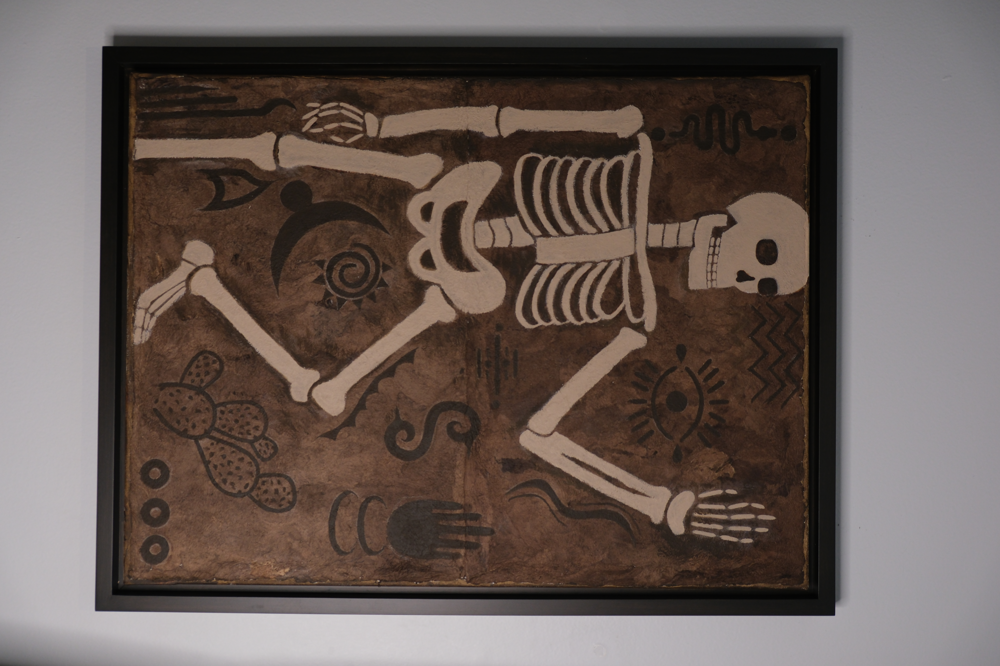

CUAXICALLI
For this painting I was inspired by the Mexican culture to blend in different elements about it in one big canvas. For the background I used metate which is a traditional bark paper that comes from fig trees, then the skeleton representing The Day of the Death and finally the backgrounf filled with Aztec symbols using earth tones
